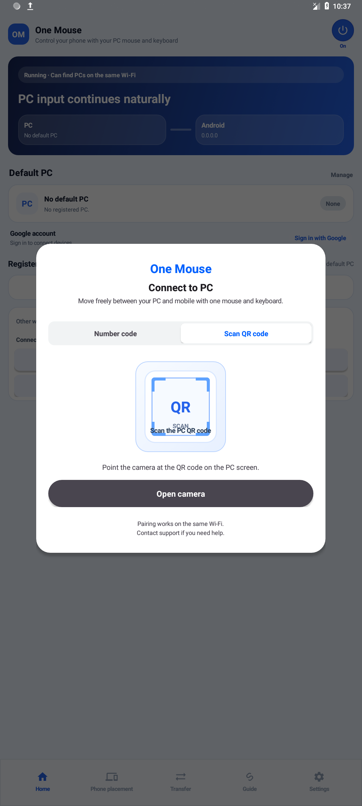
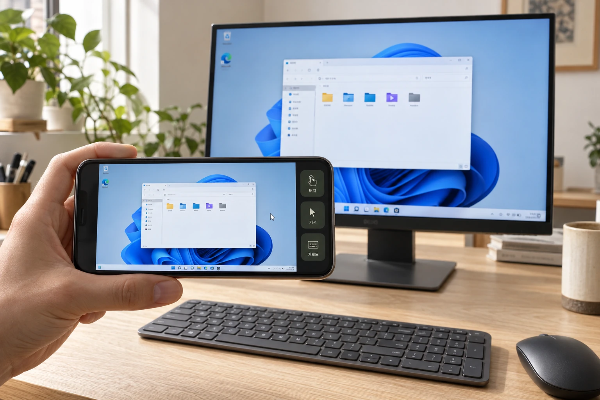
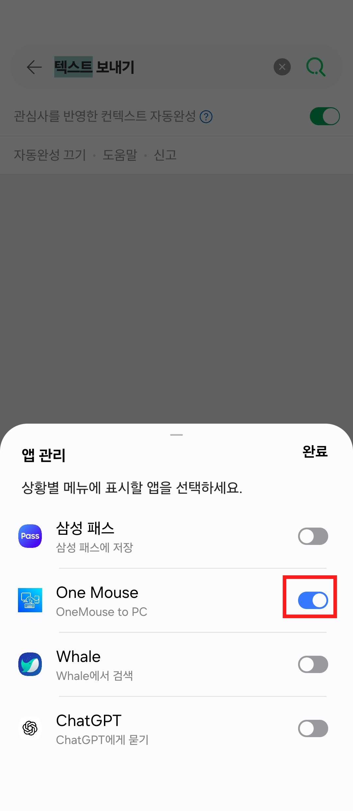
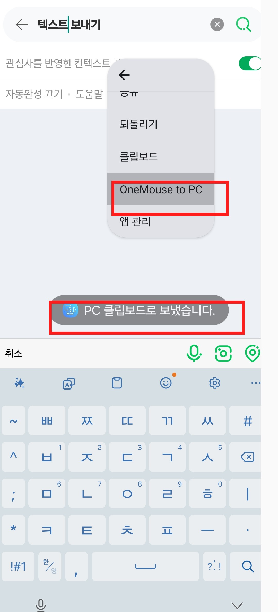

1. Déplacer le curseur
Faites glisser un doigt pour déplacer le pointeur. Soulevez et repositionnez votre doigt pour continuer à bouger.
Guide
La plupart des gens n'ont qu'à suivre cet ordre. Pour les détails de réseau plus difficile voir Technique & SécuritéEt quand quelque chose ne marche pas, vérifiez Aide séparément.
Configuration Android
Choisissez un compte Google, QR/code appariement sur le même Wi-Fi, ou Bluetooth. Les trois méthodes ont besoin d'Android Accessibilité pour contrôler votre téléphone avec la souris et le clavier PC.
Trouvez vos appareils connectés à Internet dans la liste de compte. Aucun QR ou code d'appariement n'est nécessaire.
L'accès à Internet est nécessaire. La connexion des appareils dépend du réseau. Choisissez Wi-Fi ou Bluetooth pour utiliser OneMouse sans vous connecter.
Périphérique manquant de votre compte ou incapable de se connecter? →Aucune connexion Google n'est nécessaire. Le PC peut utiliser le réseau local filaire tant qu'il est connecté au même routeur que le téléphone.
Lancez OneMouse sur les deux appareils. Ouvrez les appareils dans l'application PC.
Activer le service sous Paramètres Android → Accessibilité → Applications installées (ou applications téléchargées) → OneMouse. Les noms de menu varient selon le fabricant. Vérifiez également les autorisations nécessaires pour la découverte, comme les périphériques Wi-Fi à proximité.
Dans Appareils, élargissez Autres façons de vous connecter et de choisir le code QR pour ce PC. Cette boîte de dialogue affiche le code QR et à six chiffres.
Choisissez Accueil → Autres façons de se connecter → Ajouter avec le QR ou le code d'appariement. Entrez les six chiffres dans le code Numéro et choisissez Connecter, ou utilisez Scan QR code → Ouvrez la caméra pour scanner le QR PC. Choisissez une méthode.
Confirmez que le PC apparaît sous PC enregistrés sur l'écran d'accueil du téléphone. Les appareils déjà enregistrés n'ont pas besoin de cette authentification à chaque fois.
Correspondez Placement du téléphone à la position réelle du téléphone, puis déplacez la souris à travers la entrée du curseur configurée Si le passage est étroit, essayez d'abord le milieu du bord.



Écrans d'application réels capturés avec des dispositifs et des codes d'exemple. Utilisez le code ou QR affiché dans votre propre application PC lors de la connexion. Sélectionnez une image pour la visualiser en taille réelle.
Bluetooth est en beta. Aucun Wi-Fi, Google connexion, QR code, ou code d'appariement est requis.
Ces étapes sont pour Windows Android. Bluetooth ne transporte pas de vidéo à distance. Pour afficher l'écran de votre PC sur votre téléphone, utilisez le Wi-Fi/LAN ou une connexion de compte prise en charge.
Paramètres Bluetooth et étapes détaillées →Autorisation d'entrée : Paramètres Android → Accessibilité → Applications installées (ou téléchargées) → OneMouse. Connecté, mais la souris ne traversera pas? →
Position du téléphone
Faites glisser chaque appareil à sa position réelle dans l'écran de configuration. passage d'entrée du curseur sur le bord correspondant. Le passage ne peut couvrir qu'une partie du bord.

Télécommande
Dans Appareils, appuyez sur l'icône de télécommande sur la ligne d'un Android jumelé, et une fenêtre séparée s'ouvre montrant l'écran du téléphone. La première fois que vous l'ouvrez, l'approbation de capture d'écran Android est nécessaire.
Ouvrez une fenêtre depuis son icône de télécommande dans les périphériques ou avec la valeur par défaut Ctrl+Alt+Shift+1~9. Le déplacement du bouton droit fonctionne avec des extensions de gestes configurées dans le navigateur du PC cible, séparément des gestes Android.


Android → Windows
Consultez l'écran de votre PC, cliquez par contact, déplacez le curseur et tapez avec le clavier de votre téléphone. Le PC et Android ont besoin d'applications à jour qui prennent en charge cette fonctionnalité.

Choisissez la qualité de l'image et le taux maximum d'image dans le panneau de commande. Un PC qui prend en charge les changements de qualité en direct les applique sans reconnecter. La résolution réelle et le taux d'image dépendent des performances de l'appareil et des conditions du réseau.
Pour finir, utilisez Panneau de commande → Déconnecter. Déconnecter la télécommande laisse le PC en marche. Les connexions Bluetooth ne transportent pas de vidéo à distance.
Ces animations explicatives montrent les bases du mode curseur. Ce ne sont pas des enregistrements de l'application.
Faites glisser un doigt pour déplacer le pointeur. Soulevez et repositionnez votre doigt pour continuer à bouger.
Déplacez le pointeur sur un bouton, puis touchez une fois. Le clic se produit au pointeur, pas à votre doigt.
Placez le pointeur sur une barre de titre ou un élément et maintenez votre doigt immobile jusqu'à ce que le pointeur devienne bleu. Déplacez votre doigt pour glisser, puis le soulever pour laisser tomber l'élément.
A 1×, glissez deux doigts ensemble pour faire défiler le PC. Étalez deux doigts pour zoomer; une fois zoomé, déplacez-les ensemble pour faire passer la vue.
Gestes de souris Android
Comment activer les gestes, les schémas de sept coups, et les limites de soutien.
Dans Paramètres → Dactylographie & presse-papiers, allumez les gestes de la souris et choisissez les applications (désactivées par défaut).Les deux PC et Android ont besoin d'une version gestuelle.
Sélectionner Toutes les applications utiliser des gestes dans les applications et sur l'écran d'accueil. Vérifier les limites de support
Déplacez le pointeur PC sur le téléphone ou la tablette Android et ouvrez une application sélectionnée.
La flèche et la jauge verticale montrent la direction et l'intensité du défilement en fonction de la longueur du trait, pas votre position sur la page ou une distance exacte.
| Geste | Décision |
|---|---|
| ← | PrécédentDessiner à gauche pour revenir à la page ou à l'écran précédent. |
| → | AvancerDessinez à droite pour revenir à une page après être revenu. |
| ↑ | Faites défilerDessinez et relâchez. Les traits plus longs défilent plus; les traits plus courts défilent moins. |
| ↓ | Faites défiler vers le basDes traits plus longs défilent plus; des traits plus courts défilent moins. |
| ↓ → | Minimiser l'applicationAllez à la maison sans fermer l'application. |
| ↑ ↓ | RechargerRafraîchir la page dans un navigateur pris en charge. |
| ↑ → | Applications récentesOuvrez la liste des applications récentes pour choisir une autre application. |
Fichiers & presse-papiers
Capturer & envoyer des captures d'écran
Capturez votre propre PC ou l'appareil que vous contrôlez actuellement. Copiez ou enregistrez le résultat de l'aperçu, ou envoyez-le au presse-papiers d'un appareil connecté.
Si vous avez changé le raccourci, utilisez vos touches configurées. Esc OU Annuler ferme la sélection sans envoyer d'image.

Mobile sur PC
Pour les transferts LAN, choisissez le par défaut PC sur l'écran d'accueil de l'application mobile et vérifier qu'elle est jumelée et connectée. Envoyer des fichiers depuis l'onglet transfert ou le menu de partage d'Android, et envoyer du texte via OneMouse à PC dans le menu de sélection.
En PC Paramètres → Général → Transfert de fichiers → Emplacement du fichier reçu, utilisation Modifier le dossier de choisir la destination et Ouvrir le dossier Ceci est disponible sur les ordinateurs principaux et sous-ordinateurs.





Notifications et réponses
Dans l'application Android, activer Envoyer des notifications à l'ordinateur, permettre l'accès à la notification, et sélectionner les applications à relayer. Sur le PC principal, activer les notifications d'appareil dans Paramètres → Notifications.
Le même écran affiche l'historique et les paramètres de rétention. Plus d'informations sur les notifications
Réponse apparaît lorsque PC et Android répond et la notification téléphonique originale offre une réponse en texte libre. Tapez votre réponse et choisissez Envoyer ou Ctrl+Enter à envoyer par l'application téléphonique originale (Enter ajoute une rupture de ligne).
Raccourcis numériques
Avec au moins deux périphériques LAN sur le PC principal, choisissez Périphériques → Modifier l'ordre. Faites glisser la poignée ou utilisez ↑/↓; changez automatiquement en enregistrant, puis choisissez Fait. Les numéros de raccourci de connexion et de fenêtre distante suivent le même ordre.
Bluetooth
Bluetooth est en beta. Aucun Wi-Fi, Google connexion, QR code, ou code d'appariement est requis.
Windows.Android et Windows.Windows peut échanger des entrées, des presse-papiers et des fichiers directement via Bluetooth.

Un autre PC


Mac · Soutien public
Installez le DMG public sur le Mac, puis démarrez et gérez la connexion LAN depuis OneMouse sur Windows. Suivez ces cinq étapes.
Lancez OneMouse sur Windows 10/11 et sur Mac, avec les deux ordinateurs connectés au même Wi-Fi ou LAN. Les connexions sont démarrées et gérées depuis Windows.
Autoriser Accessibilité pour que le Mac puisse effectuer l'entrée de la souris et du clavier reçus. Sur macOS 15+, permet également Réseau local pour la découverte; macOS 13/14 peut ne pas montrer cet article.
Ouvrez les périphériques dans l'application Windows et sélectionnez le Mac détecté.
Entrez dans Windows le code d'appariement à 6 chiffres affiché par le Mac, puis validez l'appariement.
Placez le Mac à côté de l'écran Windows dans l'éditeur d'arrangements. Déplacez le curseur sur ce bord pour le contrôler et échanger des fichiers et du contenu de presse-papiers dans les deux directions.
La permission d'enregistrement audio d'écran et de système n'est nécessaire que lorsque vous choisissez de visualiser ou de contrôler l'affichage du Mac depuis Windows. OneMouse ne capture pas l'audio du système.
Mac Bluetooth est disponible sous forme de bêta : activez-le dans les paramètres de l'application Mac (désactivé par défaut). Le réseau local reste le chemin officiellement pris en charge et le partage d'écran ou de fenêtre est réservé au réseau local.
Autorisations
Besoins d'entrée Android Service d'accessibilité; besoin d'entrée Mac Accessibilité. L'affichage d'un écran distant Android ou Mac nécessite également une capture d'écran ou une approbation d'enregistrement.
Dans les paramètres de PC → Raccourcis, vous pouvez changer chaque combinaison, désactiver les actions individuelles ou désactiver tous les raccourcis. Utilisez votre combinaison sauvegardée si vous l'avez modifiée.
| Raccourci par défaut | Action et conditions |
|---|---|
| Ctrl+Alt+1~9 | PC principal : connectez le contrôle d'entrée au périphérique correspondant de la liste. Appuyez de nouveau sur le même numéro pour libérer le périphérique que vous contrôlez actuellement. |
| Ctrl+Alt+Shift+1~9 | PC principal : ouvrez la fenêtre distante correspondante ou faites avancer une fenêtre existante. L'appuyer sur elle ne ferme pas la fenêtre. Elle utilise les mêmes numéros de périphérique LAN que les raccourcis de connexion ; les périphériques Bluetooth sont exclus de la numérotation. |
| Ctrl+Alt+D | Afficher / masquer la zone Quick Drop. |
| Ctrl+Alt+S | Sélectionnez une zone sur le PC Windows, Mac ou Android périphérique que vous contrôlez et recevez sur le PC principal. Sans périphérique à distance sous contrôle, capturez ce PC. Les deux applications doivent prendre en charge la fonctionnalité, et la cible a besoin d'une permission de capture. |
| Ctrl+Alt+V | PC principal: copiez un code de vérification pendant que sa notification téléphonique est visible sur le PC. Activez d'abord le relais de notification téléphonique. |
| Ctrl+V | Recevez et collez les fichiers partagés copiés sur un autre PC. Sans les fichiers partagés en attente, la pâte ordinaire reste disponible. |
| Ctrl+Alt+Backspace | PC principal : retournez immédiatement le curseur au centre de votre propre moniteur tout en contrôlant un autre appareil. |
Ce sont des combinaisons d'entrée envoyées à Android, séparément des paramètres de raccourci de l'application PC ci-dessus. L'édition de texte dépend du support dans l'application cible et le champ texte.
| Raccourci par défaut | Action et conditions |
|---|---|
| PrintScreen | Android 11+: capturez l'écran du téléphone pendant le contrôle direct et envoyez-le à l'ordinateur. L'accessibilité est requise. |
| Alt+Shift+↑ / Alt+Shift+↓ | Augmenter / réduire la luminosité de l'écran Android. Nécessite la permission de modifier les paramètres du système. |
| Alt+↑ / Alt+↓ | Augmenter / diminuer le volume des médias Android. |
| Alt+Tab / Alt+Shift+Tab | Basculez les applications récentes / cycle en marche arrière. Relâchez Alt pour entrer dans l'application sélectionnée. |
| Ctrl+A / Ctrl+C / Ctrl+X / Ctrl+V | Sélectionner tout / copier / couper / coller dans un champ de texte pris en charge. |
| Ctrl+Insert / Shift+Insert / Shift+Delete | Copiez / collez / coupez dans un champ de texte pris en charge. |
| Ctrl+Z | Annuler dans les applications et les champs de texte qui le supportent. |
La cartographie des raccourcis Windows par défaut envoie Ctrl en tant que commande et Alt en tant qu'option. Vous pouvez passer à la cartographie des modificateurs Mac natif dans les paramètres du clavier de l'application Mac. Cela ne signifie pas remplacer Ctrl par Commande dans les raccourcis de l'application Windows ci-dessus.